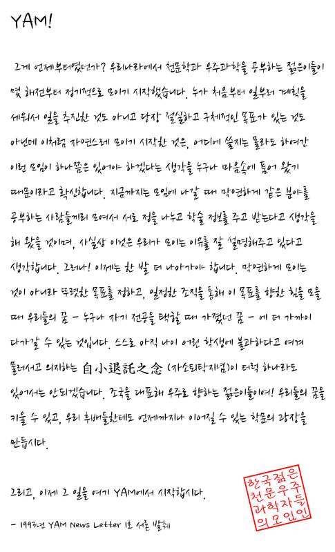

YAM의 시작과 뜻을 전합니다
안녕하세요, 25대 KYAM 회장을 맡게 된 박종인입니다. 천문학을 사랑하는 젊은 연구자들이 서로 배우고, 교류하며, 함께 성장할 수 있는 모임을 만들어가겠습니다. 다양한 활동과 행사를 통해 회원 여러분께 의미 있는 경험을 드릴 수 있도록 최선을 다하겠습니다. 많은 관심과 참여 부탁드립니다!
안녕하세요, 부회장 김대현입니다. 회장님과 운영위원들과 함께 회원 여러분이 편하게 소통하고 즐겁게 참여할 수 있는 KYAM을 만들어가겠습니다. 워크샵, 총회, 친목 활동 등 알찬 한 해가 될 수 있도록 열심히 준비하겠습니다. 언제든 편하게 연락주세요!
25대 KYAM과 함께하는 운영위원들을 소개합니다.

— 1993년 YAM News Letter 1호 서문 발췌